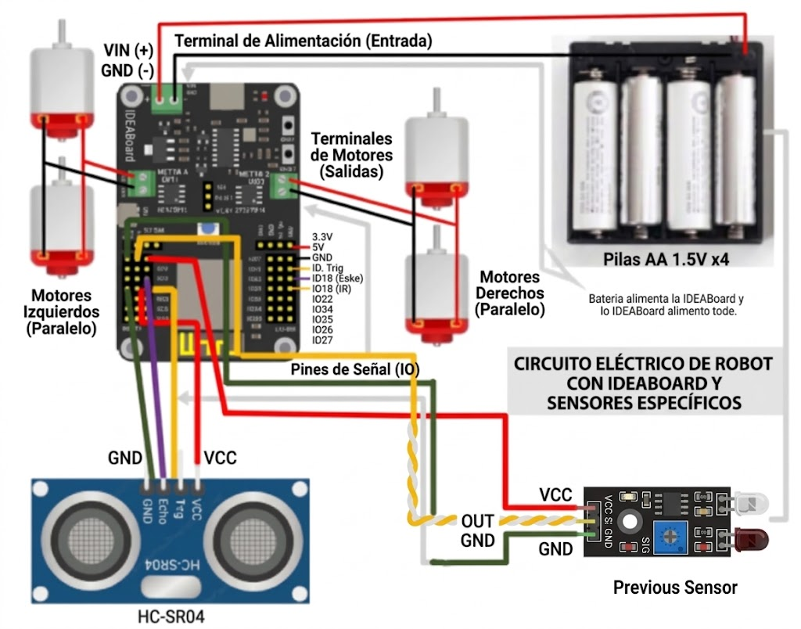

<html>
<head>
<link rel="stylesheet" href="../css/main.css">
<title>circuito</title>
</head>
</html>
<body>
<nav class="menu-navegacion">
  <ul>
    <li><a href="https://crisleonchaves-art.github.io/rover.cristopher_leon_chaves/">Inicio</a></li>
    <li><a href="#">diseños 3d</a>
      <ul class="submenu">
        <li><a href="../3D/base_rover.html">base de rover</a></li>
        <li><a href="../3D/eje_motor.html">ejes de el motor</a></li>
        <li><a href="../3D/esamblado.html">esamblado</a></li>
      </ul>
    </li>
    <li><a href="#">codigos</a>
      <ul class="submenu">
        <li><a href="../codigos/1_1v.html">1.1v</a></li>
        <li><a href="../codigos/1_2v.html">1.2v</a></li>
        <li><a href="../codigos/1_3v.html">1.3v</a></li>
        <li><a href="../codigos/1_4v.html">1.4v</a></li>
        <li><a href="../codigos/1_5v.html">1.5v</a></li>
        <li><a href="../codigos/1_6v.html">1.6v</a></li>
        <li><a href="../codigos/secrets.html">secrets</a></li>
      </ul>
    </li>
    <li><a href="#">circuito</a>
      <ul class="submenu">
        <li><a href="../circuito/circuito.html">circuito</a></li>
      </ul>
    </li>
    <li><a href="#">materiale e herramientas</a>
      <ul class="submenu">
        <li><a href="../materiales_herramientas/materiales.html">materiales</a></li>
        <li><a href="../materiales_herramientas/herramientas.html">herramientas</a></li>
      </ul>
    </li>
    <li><a href="#">dashboard</a>
      <ul class="submenu">
        <li><a href="https://io.adafruit.com/tibumba2011/dashboards/rover">adafruit io</a></li>
        <li><a href="dasboard.html">claude(recomendado)</a></li>
      </ul>
    </li
  </ul>
</nav>
  <h2 style="text-align: center;">circuito</h2>
  </br>
  <p>circuito para conectar los componentes al rover, evitando que los componentes se quemen o se dañen, hacer un abuena conecion es uno de los pasos mas importantes de 
  el rover si se lleva mal no funcionara</p>
</br>
   <style>
  .div-img-base {
    text-align: center;
  }
  </style>
  <div class="div-img-base">
  <button type="button" onclick="window.location.href='../img/circuito.jpg'">
     
  </button>
</div>
</br>
</br>
  <div class="table">
<table>
    <tr>
    <th>hardware</th>
    <th>pin</th>
    <th>consejoo</th>
    <th>color(recomendado)</th>
    <th>imagen</th>
  </tr>

  <tr>
    <td>motores</td>
    <td>motor1 </br></br> motor2</td>
  <td>son dos pares de motores </br>Los motores esatn conectado en paralelo</td>
  <td>-negro</br></br>+rojo o blanco</td>
  <td></td>
  </tr>
  <tr>
    <td>HYSRF-05 o   HC-SR04</td>
    <td>GND-----IO19(ultima fila)</br></br>vcc-----IO19(3.3v)</br></br>trig-----IO19(fila interna)</br><br>echo-----IO18(fila interna)</td>
    <td>revisar el echo y el triger, tener cuidado con el GND o sino se quema</td>
    <td>GND-----VERDE</br></br>vcc----ROJO</br></br>trig-----amarillo</br></br>morado o azul</td>
    <td>
  </tr>
  <tr>
    <td>sensor IR</td>
    <td>GND-----IO05(ultima fila)</br></br>vcc-----IO05(3.3v)</br></br>SCL-----IO05(fila interna)</td>
    <td>no intercambia el GND con el vcc o sino se quema</td>
    <td>GND-----VERDE</br></br>vcc----ROJO</br></br>SCL----cafe o naranja</td>
    <td>
  </tr>
    <tr>
    <td>baterias</td>
    <td>-(negativo)----inferior de la tajeta</br></br>+(positivo)-----superior de la tarjeta</td>
    <td>evitar dejar los cables tan larjos para evitar que se enreden</td>
    <td>-(negativo)----negro</br></br>+(positivo)----rojo</td>
    <td>
  </tr>
</table>  
</div>
</body>

